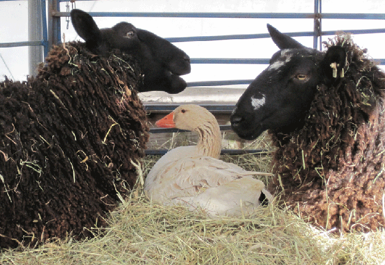
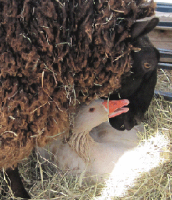
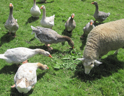
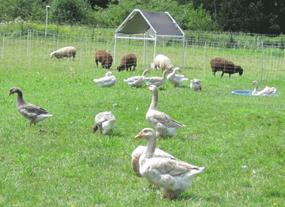

|
Farm Stories
|
||||||||||||
|  | ||||||||||||
|  | Friends In late spring, the snow piles around the outside sheep pen were higher than the fence. I went into the greenhouse to check on the sheep at noon and saw the back ends of two sheep standing together heads toward the fence and a third sheep lying down. Nothing wrong, but it seemed unusual for the sheep to be standing in that position chewing cud. I entered their pen, approached slowly, and to my surprise saw all the sheep heads just above a goose sitting in the hay. This adventurous goose, eager to find a quiet spot to lay her egg, had climbed up the large snow pile alongside the sheep pen and flew into the pen. The deep hay bedding in the barn was the perfect place. She was picking up pieces of straw, placing them around her making a nest, so she could lay her egg. One sheep then laid down opposite the one already laying down. The goose was between them, still collecting straw for her nest. The sheep heads arched over her. She spent a long time making the nest waiting to lay her egg. The sheep stayed with her until she laid her egg and left the nest. Then they went outside to eat hay in the feeder. I finished chores, and went to look at the nest… there was a beautiful huge white egg nestled in the straw. |
|||||||||||
|  | ||||||||||||
|  | ||||||||||||
| Sheep share garden veggies with the geese. |
||||||||||||
| To see the geese and sheep together was interesting, because the sheep and geese are fenced separate. In the field, the geese graze and take their naps next to the sheep pen. | ||||||||||||